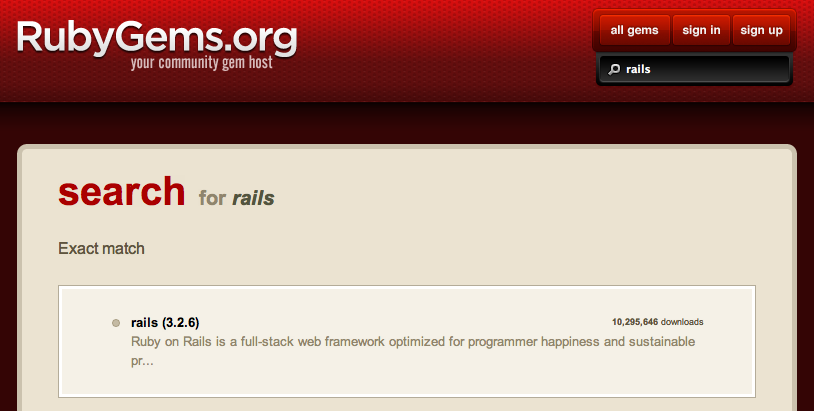

Code Foo
Code Foo
Introduction to Ruby on Rails
Gems
The ruby packages
RubyGems.org
RVM
Ruby Version Manager
$ rvm use --install 1.9.3
$ rvm current
ruby-1.9.3-p194
$ rvm gemdir
/Users/ryan/.rvm/gems/ruby-1.9.3-p194
RVM: Gemsets
$ rvm use --install --create 1.9.3@code-foo
$ rvm current
ruby-1.9.3-p194@code-foo
$ rvm gemdir
/Users/ryan/.rvm/gems/ruby-1.9.3-p194@code-foo
.rvmrc
Bundler
Gem dependency manager
Gemfile:
source 'https://rubygems.org'
gem 'faraday', '~> 0.8.0'
gem 'rails', '~> 3.2.3'
# Gems used only for assets, not required in production
group :assets do
gem 'coffee-rails', '~> 3.2.1'
gem 'jquery-rails', '~> 2.0.1'
gem 'sass-rails', '~> 3.2.3'
# See https://github.com/sstephenson/execjs#readme for more supported runtimes
gem 'therubyracer', '~> 0.10.0'
gem 'uglifier', '>= 1.0.3'
end
group :test, :development do
gem 'debugger'
gem 'rspec-rails', '~> 2.10.0'
gem 'webmock', '~> 1.8.5', :require => false
end
Warning: be careful when running 'bundle update'
TDD
Red Green Refactor
RSpec
describe '#foo'
hello.should eq('bar')
end
def foo
'bar'
end

MVC
- Model
- View
- Controller
Creating a New Rails Project
-
Install Rails
$ gem install rails -
Create a Project
$ rails new code-foo
Structure of a Rails Project
- app/ - your application code
- config/
- config.ru
- db/ - your database schema and database migrations
- doc/
- Gemfile, Gemfile.lock - your bundler configs
- lib/ - extended modules for your application
- log/
- public/ - served "as is", contains static files, and compiled assets
- Rakefile - contains and loads rake tasks, should add new tasks in lib/tasks
- README.rdoc
- script/ - contains various scripts related to your application
- test/ - default test directory, use spec/ if using RSpec
- tmp/
- vendor/ - a place for all third-party code, mostly handled through gems now
Starting your Application Server
$ rails serverGenerating a Resource
$ rails generate resource foo- create_foo database migration
- foo model and associated test files
- foos controller and associated test files
- foos views directory, but no view files
- foos helper and associate test files
- foos assets (JS and CSS)
- adds 'resources :foos' to your config/routes.rb